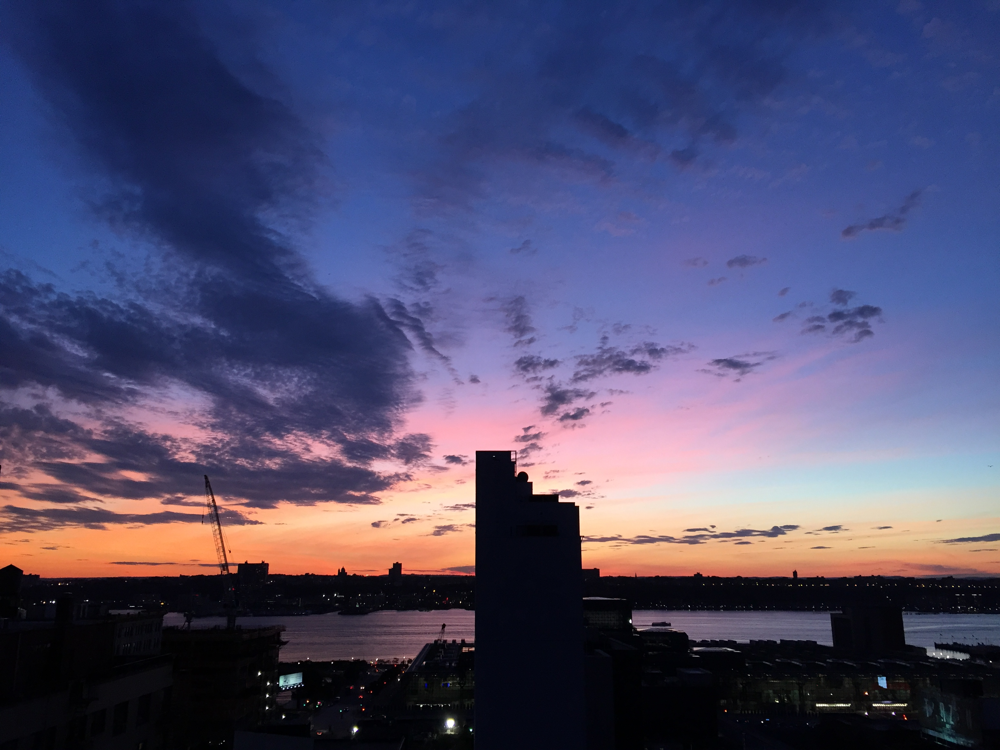
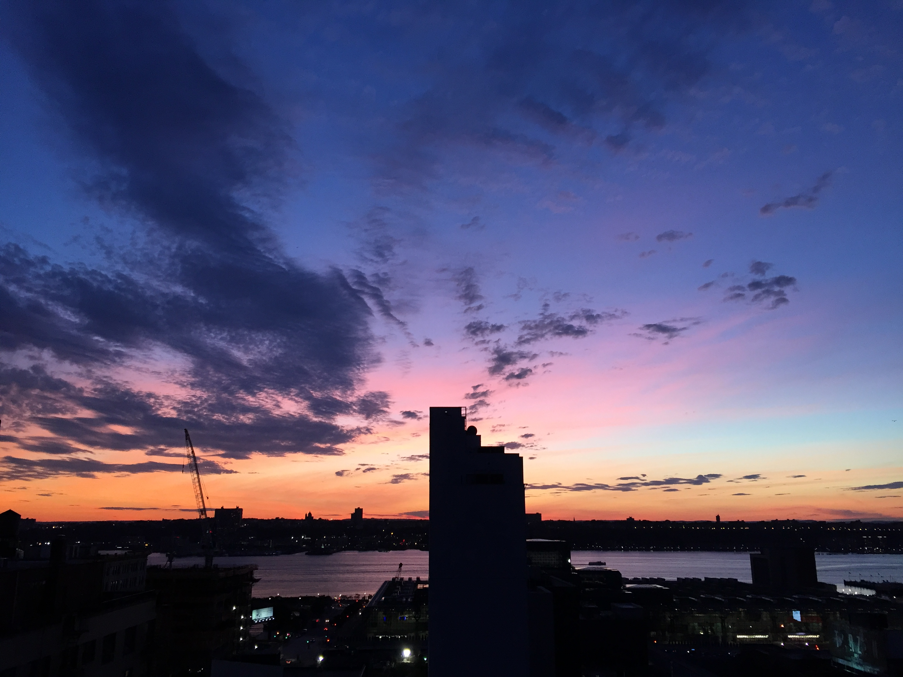

in New York City through out the summer, and love life!
My summer started by getting an apartment with 2 of my best friends from school about
10 blocks from campus. This is the view from our rooftop! Can we say amazing!
 

Throughout the summer, I worked as an Account Executive Intern for a beauty and
fashion PR agency. This led me to meeting my current boyfriend, who I spent
travelling this summer with as well. We went to:
- The Hamptons
- Boston
- Cape Cod
- Provincetown
- Nantucket
Day and it was so nice to see all of my family and catch up with
everyone! Here is a picture of me and some of my cousins!

My family and I also spent a week in San Antonio, TX. A friend of ours was getting
married there, and can we just say sweaty much? I have literally never been
that hot at a wedding... But we made the most of it!
- went shopping
- river tubing
- zip lining through the hills
- and sweat a lot...(it was 100+ degrees everyday)
This is my mom and sister from when we were zip lining. How cute are they?

Here is a link to a small video I made from our zip lining trip!
Zip Linning
As the summer has come to an end, and school resumes, I am very excited for this year
to come because I finally get to start my two minors, Creative
Technology and Mathematics. I can't wait to see what opportunities arrise this year
in the work place.
Here's to a wonderful year!